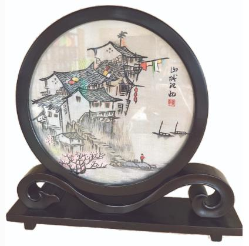
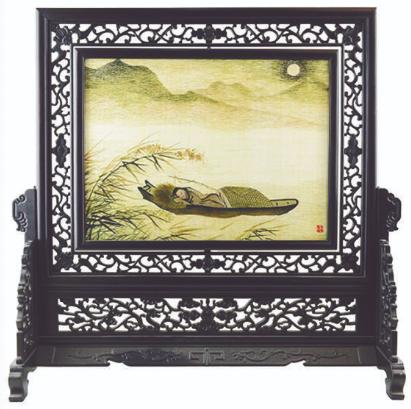
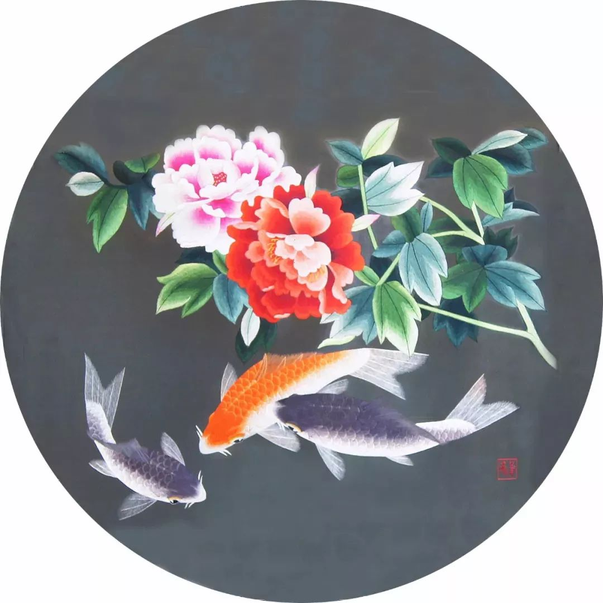
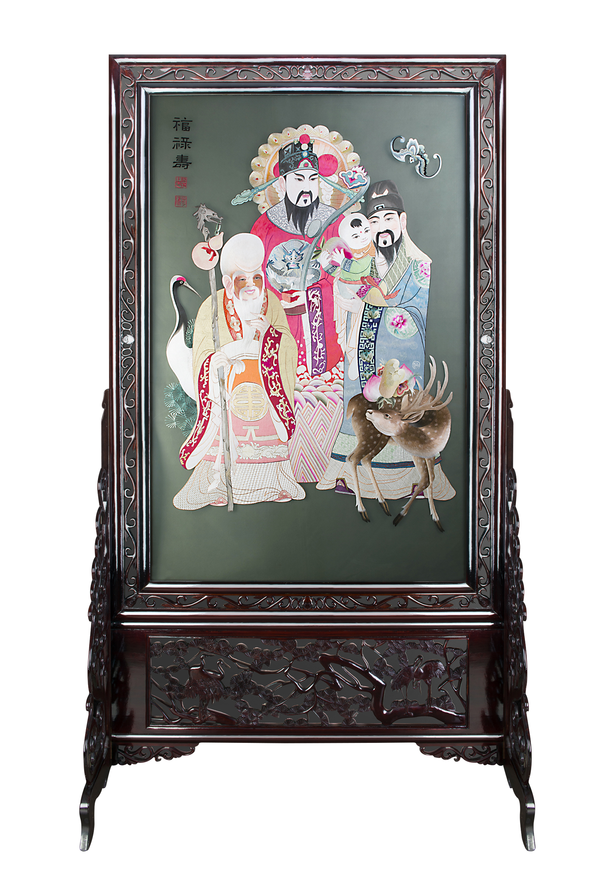
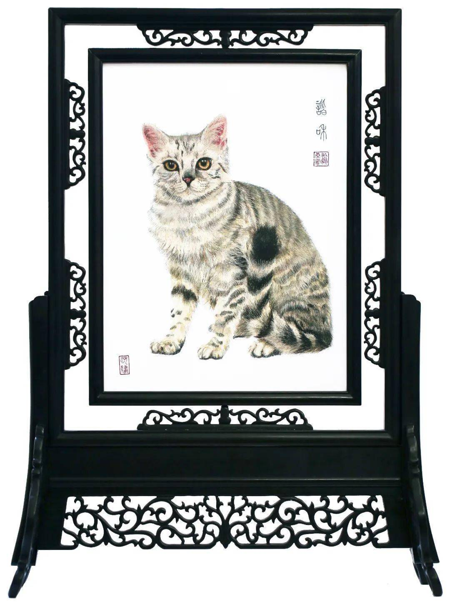

作品欣赏
蜀绣
异色荷花鱼
异色荷花鱼
《红叶小鸟》

《十犬图-茹黄豹》
运用传统的蜀绣技艺，在具有自然纹理的荣昌夏布上，以精致细腻的真丝彩线绣制，形成了粗犷与细腻对比的艺术效果

《山城记忆》

《月下泊舟》
《海棠玉兰》
《湖山一览图》
《渝中半岛》

《牡丹鲤鱼》

《福禄寿》
这幅难得一见的蜀绣双面绣珍品，对人物细节刻画极其细致，形态生动，造型透视准确，反映了蜀绣光、洁、平、齐的特点，车拧娴熟，
光泽度极佳。既传承了吉祥如意的传统题材，又是对蜀绣技法的创新，作为蜀绣针法的集大成者，精美绝伦。
福 、禄、寿在民间流传为天上三吉星，福：寓意五福临门，禄：寓意高官厚禄，寿：寓意长命百岁。中国民间喜欢将三星作为礼仪交往和日常生活中象征幸福、
吉利、长寿的祝愿，寓意美好。福禄寿三星高照，人们常用"福如东海，寿比南山"祝愿长辈幸福长寿。点缀以梅花鹿、仙鹤、
蝙蝠等动物和寿桃、松柏等植物，皆含有文化寓意，更深化了主题。
《芙蓉鲤鱼》

《谐和》